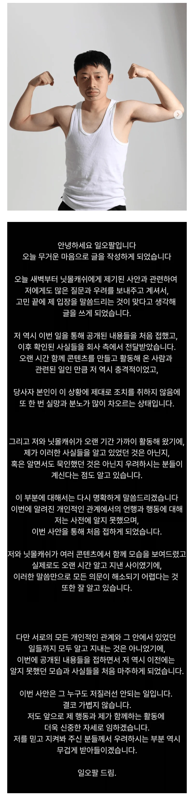
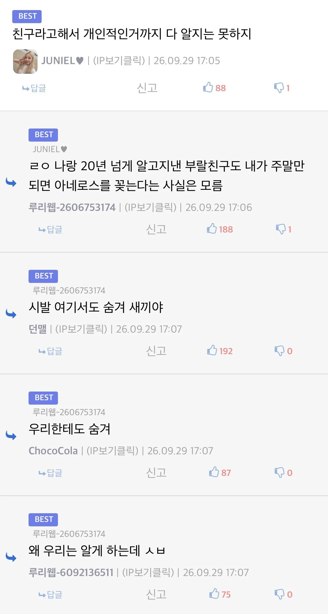

33 · 13 · 20 분 전 · 원문


수집 당시 댓글 13개
q1w2e3r4t5 · 46 분 전
왜 우리한테도 알리는데 ㅅㅂ
졸려요 · 43 분 전
ㅋㅋㅋㅋㅋㅋㅋㅋㅋㅋㅋ
고독한사냥꾼 · 36 분 전
나도 사실.....................
↳ 답글 · 고투헬 · 21 분 전
↳ 답글 · 니글니글 · 21 분 전
너도 좀 숨겨라
↳ 답글 · 環境安全이經營의第1原則 · 20 분 전
아직 말도 안 했는데 왜 그럼
↳ 답글 · Fireman · 12 분 전
그냥 숨겨 ㅋㅋㅋㅋㅋ
↳ 답글 · 번면접떨어짐 · 19 분 전
숨겨왔던 나~의
↳ 답글 · 버락 오바마 · 17 분 전
할머니 사랑꾼...
단무지 · 17 분 전
나도 29년간 울엄마가 나 바닥딸 치는지 모름
↳ 답글 · 토마토밀크티 · 16 분 전
↳ 답글 · homage · 16 분 전
엄마는 다 아신다.. ㅠ
야율아보기 · 8 분 전
주말에만 아네로스...절제력이 대단한 청년

왜 우리한테도 알리는데 ㅅㅂ